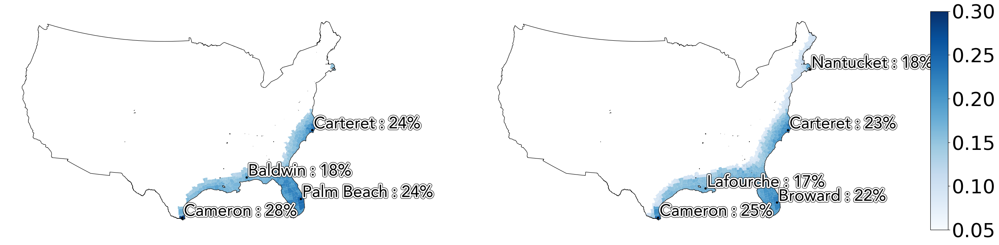

Climate Data Guide - Cyclones
Hazard Description
Tropical cyclones, also referred to as hurricanes and typhoons, are one of the costliest natural disasters. Since 1980, tropical cyclones in the U.S. have caused $997 billion in damages (NOAA), exceeding damages from all other weather disasters. Cyclone impacts can be widespread, including coastal and inland flooding and wind damage. These damages can affect livelihoods, assets, critical infrastructure, and economic activity.
Methodologies
Future Cyclone Projections
Annual probability of a Category 1 or higher cyclone at an asset location.
Indicates the projected cyclone likelihood, expressed as timeseries of annual expected probability at the asset level. This product is derived from the STORM cyclone model, which simulates future hurricane generation under climate change. We estimate the likelihood of any cyclone (Category 1 and above) occurring in a given year.
Observed tropical cyclones We use cyclone tracks from the International Best Track Archive for Climate Stewardship (IBTrACS). The IBTrACS archive combines tropical cyclone datasets from global agencies and harmonizes them into a single dataset. It is endorsed by the World Meteorological Organization as the official data source for cyclone track data. We then assume a constant ‘impact radius’ of 150 miles/ 241km around the central storm track.
Known Limitations
- Future cyclones, particularly the impact of climate change on frequency and intensity, is uncertain. This is a very active area of research in the climate resilience community. For more information, see this Atlantic article on the state of cyclone science.
- SSP1 and SSP2 are currently not available from the underlying data product, and our product is using SSP5 in place of SSP1/2 (SSP5 is duplicated in this product).
Sample Assessments
United States Counties

Projected mean annual cyclone risk exposure over 1980-2010 (left) and 2022-2052 (right) with SSP5-RCP8.5 scenario.
| US Counties with top cyclone exposure over 2022-2052 | ||||
|---|---|---|---|---|
| State | County Name | Score (1980-2020) | Score (2022-2052) | Percent Change |
| North Carolina | Dare | 0.31 | 0.3 | -4 |
| North Carolina | Hyde | 0.29 | 0.28 | -6 |
| North Carolina | Carteret | 0.28 | 0.36 | -9 |
| North Carolina | Tyrell | 0.24 | 0.25 | 3 |
| North Carolina | Pamilco | 0.27 | 0.25 | -8 |
Indian Towns

Projected mean annual cyclone risk exposure over 1980-2010 (left) and 2022-2052 (right) with SSP5-RCP8.5 scenario.
| Indian Towns with top cyclone exposure over 2022-2052 | |||
|---|---|---|---|
| Region Name | Score (1980-2020) | Score (2022-2052) | Percent Change |
| Puri | 0.25 | 0.23 | -7 |
| Srikakulam | 0.27 | 0.25 | -7 |
| Visakhapatnam | 0.28 | 0.26 | -7 |
| Vizianagaram | 0.26 | 0.24 | -9 |